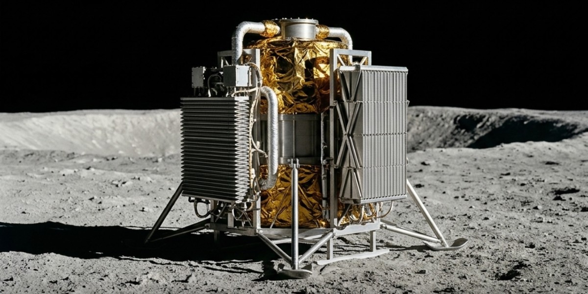

Geekotidien · Édition du 25 novembre 2026
Un réacteur nucléaire lunaire
La NASA cherche des partenaires pour un réacteur sur la Lune

La NASA cherche des partenaires industriels pour concevoir, développer et tester le premier réacteur nucléaire destiné à produire de l'électricité sur la Lune. Le programme s'appelle Lunar Reactor-1 (LR-1).
Il s'agit d'un petit système de fission de 20 kilowatts, soit la consommation annuelle d'environ 16 foyers américains moyens. Un système prêt au lancement est visé pour 2030, avec une exploitation d'au moins cinq ans sur la Lune.
L'appel d'offres s'appelle « Space Power and Reactor Capabilities ». Les propositions sont à remettre avant le 21 décembre ; l'année n'est pas indiquée dans le texte consulté. Le réacteur doit respecter les normes de sécurité du Département de l'Énergie (DOE).
Pendant les nuits lunaires, d'environ 14 jours terrestres, l'énergie solaire n'est pas disponible. La NASA présente le nucléaire comme indispensable aux plans de présence humaine durable, notamment le projet « Moon Base ».
L'annonce vient de la NASA elle-même. Le texte complet de l'appel d'offres n'a pas été consulté pour cet article.
Le + : Sur la Lune, le solaire ne suffit pas : pendant les nuits lunaires, il n'y a pas d'énergie solaire.